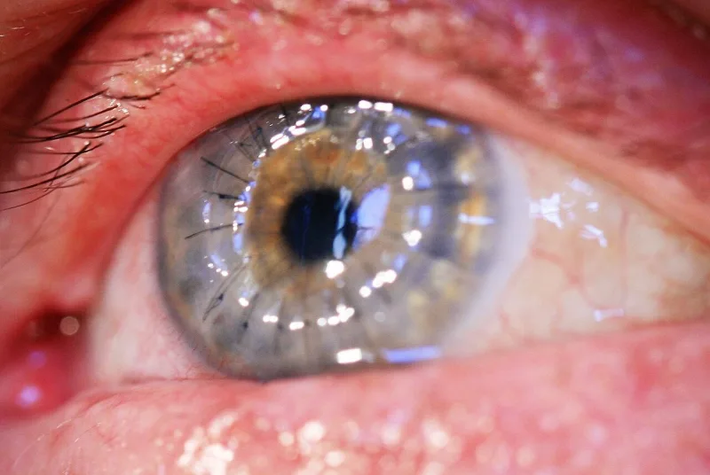

Corneas refused for thirteen years, and people went blind
AdmittedThe Watchtower's own publications admit these facts. You can make this point from their library alone.
The thirteen years
From 1967 to 1980 the Watchtower taught that accepting an organ transplant was a form of cannibalism. The Watchtower of November 15, 1967 (pp.
702-704) ruled that a Christian could not take another human's flesh into his body that way. Awake!
of June 8, 1968 (p. 21) reinforced it.
What it cost while it lasted
Witnesses refused kidneys and corneas in the years when transplants were becoming ordinary care. Some died.
Some went blind. They were obeying what was presented to them as God's own view.
How it ended
The Watchtower of March 15, 1980 (p. 31) quietly made transplants a matter of individual conscience.
The stated reason was that no scripture forbids them. That has been the position ever since.
No apology was made, and no acknowledgment was given to the members who had lost family under the old rule.
Their answer, at full strength
The 1967 article framed the question for conscience even while giving strong counsel. Refusing a transplant was never made a disfellowshipping offence in the way blood was.
The 1980 adjustment shows a Governing Body willing to correct overreach, and to stop legislating where Scripture is silent. The light gets brighter.
Members who refused acted on sincere conscience, and God honours that.
How strong is this argument?
They admit this themselves; both rulings are in their magazines. The "always conscience" softening does not survive the 1967 wording or the enforcement culture of the time.
Its real weight is as precedent. A medical prohibition taught as divine law, with lives at stake, was reversed as though it had never been the truth.
That is the exact position the blood ban occupies today.
What to say
"What would you say to a family whose father refused a kidney in 1975?"


How they answer this — at its strongest
It was guidance for conscience, never an expulsion offense, and 1980 pulled it back.
The best available Witness defense has two parts. The 1967 article framed transplants as a question for conscience, even while giving strong guidance. And accepting one was never made a formal disfellowshipping offense, in the way blood was.
The 1980 adjustment shows a Governing Body willing to correct overreach. It was unwilling to rule where Scripture is silent. The light gets brighter. Members who refused acted on sincere conscience, which God honours.
The verdict
They admit it themselves. A rule taught as God's law was reversed without apology.
Both rulings are in their own publications. The 1967 ban, in the cannibalism frame, and the 1980 reversal. The sequence is undisputed.
The 'always a conscience matter' softening is contradicted by the 1967 article's own language. It is also contradicted by the enforcement culture of the time.
Grade the core as admitted, and present the defense. Its force is as precedent. Divine law with mortal stakes, reversed without apology.
Sources
- AJWRB — Organ transplants
- jwfacts — Dangerous Watchtower medical advice
- Thinking Witnesses — Organ transplants are cannibalism?